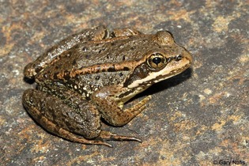
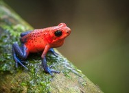

Welcome to my Favorite Animal page! In this I will tell you about my personal favorite animal: the frog. I've loved frogs since I was young because I had a frog plushie. Here are some of the cool frogs out there:
This frog is doing a great job blending in! It's really impressive how different species of frogs adapt to different environments. In this case, this frog species took on the color of the gray-muddy environment it usually lives in. It might look obvious to us, but most of its predators probably aren't that smart, so it works at warding off predators.
This frog is taking a totally different approach. Since it is poisonous, it has a distinct color to let predators know. That way, no one will want to eat it. Finally, here is some audio of frogs croaking!